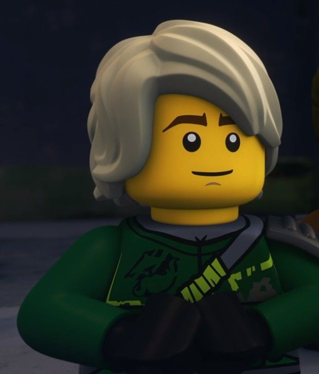
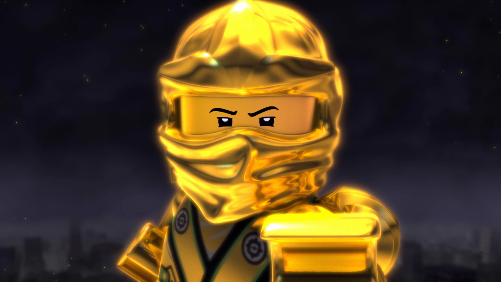

Master Lloyd Montgomery Garmadon is the legendary Green Ninja, the Master of Energy, the former Golden Ninja, and the current leader of the ninja team. He is Garmadon and Misako's son, Wu's nephew, and the First Spinjitzu Master's grandson. Once a bratty kid who sought to follow in his evil father's footsteps, Lloyd changed his ways by helping the ninja and embracing his destiny as the Green Ninja. As the ninja trained Lloyd, he reunited with Misako, artificially matured into a teenager, and faced a Garmadon manipulated and possessed by the Overlord—becoming the Golden Ninja. Though Garmadon was purified, the Overlord later returned, but was vanquished upon Zane's sacrifice. Lloyd brought the team together to save Zane in the Tournament of Elements, culminating in the Second Serpentine War, which ended with Lloyd having to banish his father to the Cursed Realm; unintentionally freeing Wu's old pupil, Morro.
Morro soon had possessed Lloyd and claimed the Realm Crystal to free the Preeminent, eventually succeeding. Lloyd escaped Morro's possession in a trade and helped battle him, but the Preeminent's death destroyed the Cursed Realm, killing Lloyd's father, the Anacondrai Warriors, Chen, and any other beings imprisoned inside, and Djinjago, as they were sister realms. Shortly after, Lloyd helped battle the Sky Pirates and their captain, Nadakhan. The fight against the Sky Pirates was undone along with all other recent events after Jay reversed time in his final wish. On the Day of the Departed, Lloyd and Misako commemorated Garmadon at the Corridor of Elders, where he fought against Pythor. Lloyd would later battle the Time Twins and their Vermillion army. Lloyd temporarily led the ninja and became their new master while Wu was lost in time.
Lloyd led the ninja against the Sons of Garmadon, who sought to resurrect his father, while also being attracted to Harumi—who is revealed to be the Quiet One and ends up being the leader of the group. Lord Garmadon is resurrected as an evil warlord, disowns and nearly kills Lloyd in a vicious battle that strips him of his powers. After the Colossus seemingly killed the original ninja and a toddler Wu, Lloyd led the Resistance against his corrupted father and his followers, the Sons of Garmadon. Eventually, all of the ninja returned to Ninjago and helped fight the Sons of Garmadon. In a climactic battle, Lloyd regained his powers while using the Art of the Silent Fist and defeated his father, who warned him of coming darkness as he was arrested. When the Oni invaded Ninjago, Lloyd and Garmadon discover the secret to defeating them is the Golden Armor. With the Golden Weapons rebuilt, Lloyd, the ninja, Wu, and Garmadon combined their powers into an ultimate Tornado of Creation, vanquishing the Bringers of Doom and freeing the realms from their destructive grasp.
Months after the Oni's invasion, Lloyd and his friends became very leisurely, until a series of new conflicts broke out; they battled Aspheera's army and journeyed to the Never-Realm to fight a corrupted Zane, then battled digital enemies in Prime Empire, and waged war in the Dungeons of Shintaro against the Skull Sorcerer and his legions. Sometime later, Lloyd traveled to the Island of the Keepers to save Misako and Wu. He ended up having to rescue all the other ninja when he was the only one to escape being captured by the Keepers. There, the ninja discovered the Storm Amulet and the existence of Wojira. He realized that the Keepers were being tricked into giving away sacrifices to a fake Wojira, and stopped the Kryptarium inmates who were behind it. Later, he would explore the sea with Maya, Nya, Zane, P.I.X.A.L., Jay, and Benthomaar to stop Kalmaar from awakening the evil serpent, Wojira. Unfortunately, the serpent was awoken and attacked Ninjago. Lloyd saved as many people as possible but Wojira was so powerful Nya had to sacrifice herself to defeat her. After that, he went to a memorial to honor Nya.
One year later, all the ninja minus Zane and Cole went on their separate ways after Nya's sacrifice, with Lloyd working on cleaning windows in the city. However, he was convinced to be back in action to successfully return Nya to her human form, though with the cost of releasing Aspheera from incarceration and stealing her staff, resulting in the ninja being imprisoned in Kryptarium Prison. However, Lloyd and the ninja escaped to investigate the Crystal King's identity and plans of forming a Council of their past enemies. Lloyd went undercover as the Mechanic into the Council to investigate, but he was captured while shocked and horrified to see Harumi revealing herself to be alive. After Harumi and the Council initiate a ritual to summon the Crystal King, Lloyd is shocked to learn that the Crystal King is really the Overlord. He later manages to escape and rejoins Master Wu and the ninja. Lloyd and Master Wu follow a lead that brings them face-to-face with Garmadon. After seeing the effectiveness that Garmadon's newfound Oni form had against the Crystal King's army, Lloyd undergoes Garmadon's Oni form lesson but it proved unsuccessful. Later on, Lloyd and Garmadon face off in an epic battle against the Crystal King, with Harumi joining them. Lloyd uses the Golden Ultra Dragon to defeat the Crystal King, ending his terror on Ninjago City, and is last seen helping to rebuild the ninja's previously destroyed monastery.
Appearance
Lloyd has long, blonde tousled hair, and brown arched eyebrows. His eyes are visibly green, and occasionally glow when he uses his powers. As of Sons of Garmadon, Lloyd had grown up further and has an updated design and deeper voice. Lloyd is usually seen with a smirking expression. Whenever he lost access to his powers in Hunted, his green eyes returned to their original black color. When he is driven to his breaking point, such as in The Spider's Design, his eyes take on a purple hue, unleashing his Oni side.
Previously, Lloyd had thin, black eyebrows and normal eyes. Initially, Lloyd was a young boy with a blonde "bowl-cut" hairstyle. After the Grundle incident in "Child's Play" exposed him to the aging effects of Tomorrow's Tea, Lloyd became a teenager with a slightly deeper voice and a new, tousled hairstyle.
As a child, he wore black clothing, a purple sash around his waist, with white rib-like markings on his shirt, resembling the appearance of his father, Lord Garmadon. However, the illusion is negated by Lloyd's normal-looking face and hands, as well as the small green number "5" on the upper left side of his shirt that foreshadows him being the fifth and the Green Ninja. While leaving Darkley's Boarding School for Bad Boys, Lloyd stole a black hood and cape to make his outfit look more menacing. After moving in with the ninja, he wore it periodically, primarily during his time in the Serpentine's captivity. When his destiny as the Green Ninja was revealed, Lloyd mainly wore the green gi of the Chosen One (ZX). Also, here are Lloyd's appearances in other ninja suits.
When possessed by Morro's spirit, Lloyd's hair darkens to black and his skin becomes pale with visible shadows surrounding his eyes, similar to Morro’s own appearance. His suit takes on more of a darker shade of green and has more black accessories including a hood. Between "Winds of Change" and "The Temple on Haunted Hill," he adorned the Allied Armor of Azure.
As of "Curseworld, Part I," Lloyd once again has civilian attire consisting of a green shirt, blue pants, and a dark green jacket with his dragon symbol on the back. He wears a black fedora with a green stripe with it in Skybound.
When he fought Morro and was freed from the Cursed Realm, he was wearing his father's gi.
In Skybound, he was briefly turned into an old man after making a wish to Nadakhan to become "wise like Wu" in "Wishmasters," referencing Wu's remark to Morro in "Winds of Change," "with age comes wisdom." He became an elderly man with a similar appearance to his father and uncle, with white hair and increasingly more apparent wrinkles and age lines. This change was reversed as a result of Jay's wish in "The Way Back," which caused the majority of events in Skybound to be undone.
In "The Jade Princess," Harumi gives Lloyd a white hooded jacket to wear over his ninja gi as a disguise.
In "The Gilded Path," Lloyd wears an outfit similar to what some of the fishermen in Ninjago City wear, after burning his ninja suit. Harumi called his appearance "a beggar in rags."
In "Racer Seven," Lloyd wears his avatar in an attempt to disguise himself from the Red Visors. It consists of a green jacket with a right gold sleeve, unzipped to reveal his chest, green pants, gold boots, and a brownish-blonde Mohawk.
In "Farewell the Sea" and "The Shape of Nya," as a window washer, Lloyd wears a white t-shirt, green overalls, and a white and green cap.
In "The Fifth Villain" and "The Council of the Crystal King," Lloyd disguised himself as The Mechanic to infiltrate the Crystal King's Council. His disguise consisted of a black bowler hat, a faux mustache, a mechanical arm and a red coat.
In "Roots", Lloyd unleashed his full Oni form, which consisted of a golden body compared to other oni, four arms, long horns and glowing purple eyes, while the sets his Oni form has two arms, green eyes, and gold horns
Age
Physically, Lloyd is in his late adolescence, like the majority of his fellow ninja. As of "Day of the Departed," he was chronologically in his early teens, making him the youngest of the ninja team.[1] Prior to the Tomorrow's Tea, he was a short legged pre-teen child. In Chapter 4 of The Splinter in the Blind Man's Eye, it's stated that he was less than ten at the time of "Rise of the Snakes."
What follows are merely possible estimations using past creator statements on the matter of the ninja's ages. Officially, their specific ages are not canonically set in stone or defined, and these statements may no longer apply. Possible estimations: Initially, Lloyd may have been a young boy of about 9–11 years old, 5–6 years younger than the ninja.[2][3] After using the Tomorrow's Tea to save his friends and destroy the Grundle, Lloyd was caught in the blast that reversed the Mega Weapon's de-aging spell. While the ninja returned to their normal ages, Lloyd was aged into his teens along with them (who were at least 16 years old) but was still mentally a kid.[4][5] As he may have been aged around two years older, he would then be the same physical age as Nya.[6] Alternatively, he may have been around the same physical age as the other ninja.[7] As of Season 8, he was mentally close to the older ninjas' ages.[8]
Relationships
Main article: Lloyd's relationships
Family
- First Spinjitzu Master (grandfather)
- Garmadon (father)
- Wu (uncle)
- Misako Montgomery Garmadon (mother)
Allies
- Ninja
- Dragons
- Serpentine (former enemies)
- Darkly's students (former enemies)
- Ninjago Police
- The Resistance
- Ice Fishers
- Krag
- League of Jay
- Geckles
- Munce
- Upply
- Keepers (former enemies)
- Merlopians (former enemies)
- Morro (former enemies)
- Harumi (former enemies)